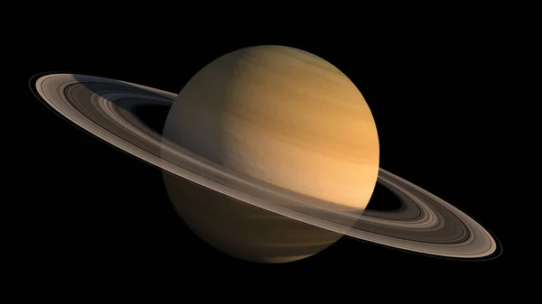
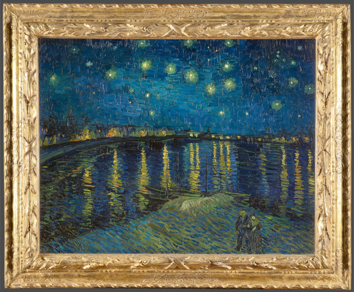

.L'astronomie est une science fascinante qui nous permet d'explorer l'univers et de découvrir les merveilles qui nous entourent. À travers l'observation des étoiles, des galaxies et des planètes, nous apprenons davantage sur l'origine et l'évolution de notre cosmos. Notre système solaire est composé de huit planètes, chacune unique en son genre. Mercure, la plus proche du Soleil, est une petite planète chaude et sans atmosphère. Vénus, souvent appelée la 'sœur' de la Terre, est une planète enveloppée de nuages épais. La Terre, notre planète, est la seule connue à abriter la vie. Mars, la planète rouge, fascine par ses paysages désertiques et ses mystères. Jupiter, la plus grande planète du système solaire, est un géant gazeux avec une célèbre tache rouge. Saturne, avec ses magnifiques anneaux, est un spectacle incroyable à observer. Uranus et Neptune, les planètes lointaines, possèdent des atmosphères glacées et des caractéristiques mystérieuses. L'astronomie nous aide à mieux comprendre ces mondes fascinants et à rêver de l'infini de l'univers.

Peinture de Vincent Van Gogh
La peinture de Vincent van Gogh est véritablement fascinante. À travers ses œuvres, il a su capturer l’intensité de ses émotions et la beauté du monde qui l’entourait. Van Gogh a utilisé des couleurs vibrantes et des coups de pinceau audacieux pour donner vie à ses tableaux, créant une atmosphère unique. Par exemple, dans son célèbre tableau La Nuit étoilée, il représente le ciel nocturne dans toute sa splendeur, avec des tourbillons de bleu, des étoiles lumineuses et une lune en forme de croissant. Les coups de pinceau visibles ajoutent de la texture et de la profondeur, transmettant l'énergie et la force de la scène. Les paysages, les champs de blé, les tournesols et les portraits qu’il a peints témoignent de sa capacité à voir le monde d’une manière différente, où chaque détail est une expression de son état intérieur. Sa manière de peindre, parfois pleine de tensions et de tourments, fait de lui un maître de l'art post-impressionniste, et ses tableaux continuent d'inspirer et de captiver les amateurs d'art du monde entier.

Musique de Piano
La musique du Château Ambulant, composée par Joe Hisaishi, est tout simplement incroyable. Dès les premières notes au piano, on est immédiatement transporté dans un univers magique et émouvant. Ce morceau, à la fois doux et puissant, parvient à capturer l’essence de l’histoire du film tout en évoquant une grande richesse émotionnelle. Les variations de tempo et de tonalité, qui passent du calme et serein à des passages plus intenses et dramatiques, illustrent parfaitement le voyage fantastique et les défis des personnages principaux. Le thème du château, avec sa majesté et son mystère, est magnifiquement mis en valeur par la mélodie fluide et expressive. Le piano, avec sa capacité à évoquer des émotions profondes, donne une dimension particulière à cette musique, accentuant l’atmosphère onirique et parfois mélancolique du film. La simplicité et la profondeur de la composition font que chaque note semble parler, et on ressent pleinement la beauté du monde créé par Hayao Miyazaki. Cette musique est non seulement un chef-d'œuvre en soi, mais elle possède aussi une force particulière pour nous toucher au cœur, et un jour, j’aimerais pouvoir la reproduire au piano pour partager cette magie avec les autres.